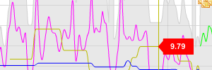
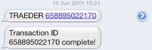
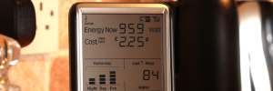

floppy.github.com
Code of which I am proud...
AMEE »
AMEE is web service that provides calculation of greenhouse gas emissions and other sustainability metrics. My employer since 2008, favourite projects are AMEEdiscover and Ask AMEE.
The Carbon Diet »
A site created way back in 2007 that combines accurate and timely emissions measurement with social aspects to create a new approach to carbon footprinting. Now open source.
Climatecraft »
A Minecraft mod that adds carbon emissions and sequestration. Winning hack at the Stockholm Green Hackathon in 2011, covered by The Guardian, Kotaku, BoingBoing and TreeHugger.
Traeder »
A hack written at Hactivate 2011 that implements an SMS-based system for exchange of alternative currencies, without requiring special hardware or physical tokens of any kind.
Social Meter »
A system that combines live energy monitoring information with social networks, to give more context and drive continuous engagement with energy use. Built at #rscarbon in 2010.
QuestionYourCandidates »

A site written to crowdsource hustings details during the 2010 UK General Election, using APIs from YourNextMP and TheyWorkForYou. Sadly written too late to be useful, but a good idea.
Green Thing »
A charity I worked with in 2007-8 that tries to make a sustainable lifestyle more desirable by creating inspirational (and aspirational) content and allowing people to share their own inspiration with others.
@CO2Updates »
A twitter bot that announces the latest atmospheric CO2 measurements, grabbed from the NOAA on a monthly basis. Serves as a handy reminder of the ticking clock.
Currentcost »
Various bits of hacking around with the output of a CurrentCost energy monitor, including a ruby gem and system daemon for publishing information to the web.